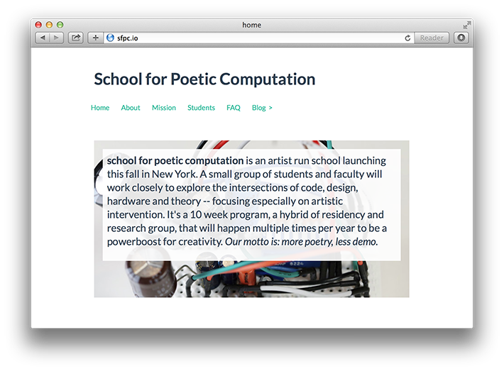
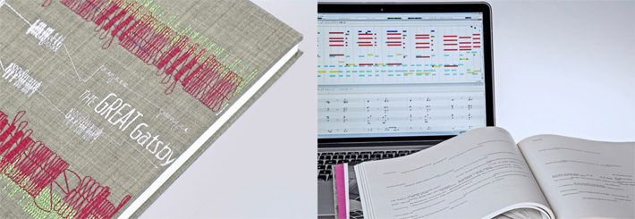
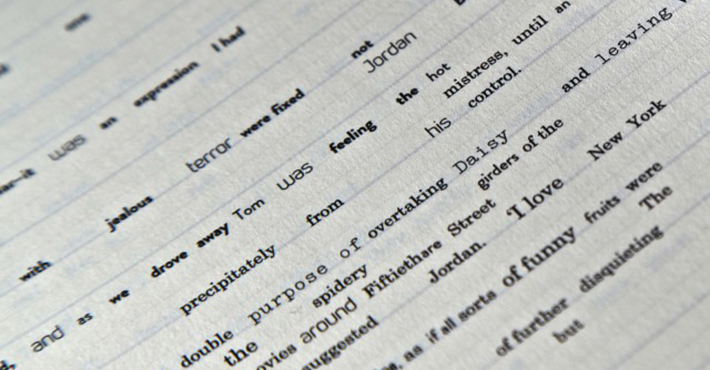

Class 1: Date
Welcome
- Overview of this class
- Review tentative schedule
- Q & A
Purchases
You won't need these things until after Spring Break, but I would recommend purchasing them sooner, rather than later.
- Arduino Leonardo (with headers)*
- * If you have an older Arduino, you don't need to buy a Leonardo replacement.
- Micro USB cable (if you have an Android phone you probably already have this)
- Breadboard (small or large, but make sure it has power busses along sides)
- Storage box
Amazon is a (surprisingly) great place to buy this stuff, particularly if you have a Prime account (which is free to students for a limited time!).
Other options:
What is Processing?
"Processing is a programming language, development environment, and online community. Since 2001, Processing has promoted software literacy within the visual arts and visual literacy within technology. Initially created to serve as a software sketchbook and to teach computer programming fundamentals within a visual context, Processing evolved into a development tool for professionals. Today, there are tens of thousands of students, artists, designers, researchers, and hobbyists who use Processing for learning, prototyping, and production." description from processing.org
Creative Coding, Poetic Computation
"The main challenge is trying to create work that touches people at an emotional level, as opposed to them thinking about the technology or wondering how it was made. Making poems, not demos, is how we refer to it, i.e. making work that is like a poem, short yet dense, re-tellable, rhythmic, meaningful as opposed to a demo that just feels like technology for technology's sake." Zach Lieberman
Manual Input Sessions by tmema(Golan Levin/Zach Lieberman)
IQ font by Happiness Brussels/Zach Lieberman
The Eyewriter by FAT/Zach Lieberman
 Code to Joy: School for Poetic Computation Opens
Other forms...
  The Generative Gatsby: Jazzed Up Typography by Vladimir V. Kuchinov
unnamed soundsculpture by Onformative
illucia by Chris Novello
Hello World!
Today, we'll be getting our feet wet with the Processing environment and language– drawing shapes, adjusting their attributes, and working with images.
- Install Processing (link)
- Tour of the programming environment
- Structure of a Processing sketch
- Running a sketch
- Syntax is the grammar of code
- Setting window properties
- Shape primitive functions
- Adjusting attributes (color, fill, stroke)
- Coordinates and rotation
- Working with images
- The sketchbook
- Tinting and transparency
- Using Processing's Reference
Sample code
Heavily commented code examples available here.